Object detection with Vision Transformers
Author: Karan V. Dave
Date created: 2022/03/27
Last modified: 2023/11/20
Description: A simple Keras implementation of object detection using Vision Transformers.

Introduction
The article Vision Transformer (ViT) architecture by Alexey Dosovitskiy et al. demonstrates that a pure transformer applied directly to sequences of image patches can perform well on object detection tasks.
In this Keras example, we implement an object detection ViT and we train it on the Caltech 101 dataset to detect an airplane in the given image.
Imports and setup
import os
os.environ["KERAS_BACKEND"] = "jax" # @param ["tensorflow", "jax", "torch"]
import numpy as np
import keras
from keras import layers
from keras import ops
import matplotlib.pyplot as plt
import numpy as np
import cv2
import os
import scipy.io
import shutil
Prepare dataset
We use the Caltech 101 Dataset.
# Path to images and annotations
path_images = "./101_ObjectCategories/airplanes/"
path_annot = "./Annotations/Airplanes_Side_2/"
path_to_downloaded_file = keras.utils.get_file(
fname="caltech_101_zipped",
origin="https://data.caltech.edu/records/mzrjq-6wc02/files/caltech-101.zip",
extract=True,
archive_format="zip", # downloaded file format
cache_dir="/", # cache and extract in current directory
)
download_base_dir = os.path.dirname(path_to_downloaded_file)
# Extracting tar files found inside main zip file
shutil.unpack_archive(
os.path.join(download_base_dir, "caltech-101", "101_ObjectCategories.tar.gz"), "."
)
shutil.unpack_archive(
os.path.join(download_base_dir, "caltech-101", "Annotations.tar"), "."
)
# list of paths to images and annotations
image_paths = [
f for f in os.listdir(path_images) if os.path.isfile(os.path.join(path_images, f))
]
annot_paths = [
f for f in os.listdir(path_annot) if os.path.isfile(os.path.join(path_annot, f))
]
image_paths.sort()
annot_paths.sort()
image_size = 224 # resize input images to this size
images, targets = [], []
# loop over the annotations and images, preprocess them and store in lists
for i in range(0, len(annot_paths)):
# Access bounding box coordinates
annot = scipy.io.loadmat(path_annot + annot_paths[i])["box_coord"][0]
top_left_x, top_left_y = annot[2], annot[0]
bottom_right_x, bottom_right_y = annot[3], annot[1]
image = keras.utils.load_img(
path_images + image_paths[i],
)
(w, h) = image.size[:2]
# resize images
image = image.resize((image_size, image_size))
# convert image to array and append to list
images.append(keras.utils.img_to_array(image))
# apply relative scaling to bounding boxes as per given image and append to list
targets.append(
(
float(top_left_x) / w,
float(top_left_y) / h,
float(bottom_right_x) / w,
float(bottom_right_y) / h,
)
)
# Convert the list to numpy array, split to train and test dataset
(x_train), (y_train) = (
np.asarray(images[: int(len(images) * 0.8)]),
np.asarray(targets[: int(len(targets) * 0.8)]),
)
(x_test), (y_test) = (
np.asarray(images[int(len(images) * 0.8) :]),
np.asarray(targets[int(len(targets) * 0.8) :]),
)
Implement multilayer-perceptron (MLP)
We use the code from the Keras example Image classification with Vision Transformer as a reference.
def mlp(x, hidden_units, dropout_rate):
for units in hidden_units:
x = layers.Dense(units, activation=keras.activations.gelu)(x)
x = layers.Dropout(dropout_rate)(x)
return x
Implement the patch creation layer
class Patches(layers.Layer):
def __init__(self, patch_size):
super().__init__()
self.patch_size = patch_size
def call(self, images):
input_shape = ops.shape(images)
batch_size = input_shape[0]
height = input_shape[1]
width = input_shape[2]
channels = input_shape[3]
num_patches_h = height // self.patch_size
num_patches_w = width // self.patch_size
patches = keras.ops.image.extract_patches(images, size=self.patch_size)
patches = ops.reshape(
patches,
(
batch_size,
num_patches_h * num_patches_w,
self.patch_size * self.patch_size * channels,
),
)
return patches
def get_config(self):
config = super().get_config()
config.update({"patch_size": self.patch_size})
return config
Display patches for an input image
patch_size = 32 # Size of the patches to be extracted from the input images
plt.figure(figsize=(4, 4))
plt.imshow(x_train[0].astype("uint8"))
plt.axis("off")
patches = Patches(patch_size)(np.expand_dims(x_train[0], axis=0))
print(f"Image size: {image_size} X {image_size}")
print(f"Patch size: {patch_size} X {patch_size}")
print(f"{patches.shape[1]} patches per image \n{patches.shape[-1]} elements per patch")
n = int(np.sqrt(patches.shape[1]))
plt.figure(figsize=(4, 4))
for i, patch in enumerate(patches[0]):
ax = plt.subplot(n, n, i + 1)
patch_img = ops.reshape(patch, (patch_size, patch_size, 3))
plt.imshow(ops.convert_to_numpy(patch_img).astype("uint8"))
plt.axis("off")
Image size: 224 X 224
Patch size: 32 X 32
49 patches per image
3072 elements per patch
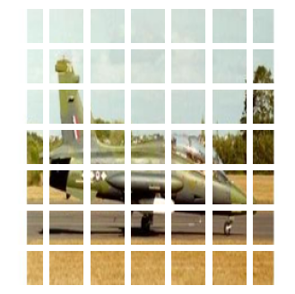
Implement the patch encoding layer
The PatchEncoder layer linearly transforms a patch by projecting it into a
vector of size projection_dim. It also adds a learnable position
embedding to the projected vector.
class PatchEncoder(layers.Layer):
def __init__(self, num_patches, projection_dim):
super().__init__()
self.num_patches = num_patches
self.projection = layers.Dense(units=projection_dim)
self.position_embedding = layers.Embedding(
input_dim=num_patches, output_dim=projection_dim
)
# Override function to avoid error while saving model
def get_config(self):
config = super().get_config().copy()
config.update(
{
"input_shape": input_shape,
"patch_size": patch_size,
"num_patches": num_patches,
"projection_dim": projection_dim,
"num_heads": num_heads,
"transformer_units": transformer_units,
"transformer_layers": transformer_layers,
"mlp_head_units": mlp_head_units,
}
)
return config
def call(self, patch):
positions = ops.expand_dims(
ops.arange(start=0, stop=self.num_patches, step=1), axis=0
)
projected_patches = self.projection(patch)
encoded = projected_patches + self.position_embedding(positions)
return encoded
Build the ViT model
The ViT model has multiple Transformer blocks.
The MultiHeadAttention layer is used for self-attention,
applied to the sequence of image patches. The encoded patches (skip connection)
and self-attention layer outputs are normalized and fed into a
multilayer perceptron (MLP).
The model outputs four dimensions representing
the bounding box coordinates of an object.
def create_vit_object_detector(
input_shape,
patch_size,
num_patches,
projection_dim,
num_heads,
transformer_units,
transformer_layers,
mlp_head_units,
):
inputs = keras.Input(shape=input_shape)
# Create patches
patches = Patches(patch_size)(inputs)
# Encode patches
encoded_patches = PatchEncoder(num_patches, projection_dim)(patches)
# Create multiple layers of the Transformer block.
for _ in range(transformer_layers):
# Layer normalization 1.
x1 = layers.LayerNormalization(epsilon=1e-6)(encoded_patches)
# Create a multi-head attention layer.
attention_output = layers.MultiHeadAttention(
num_heads=num_heads, key_dim=projection_dim, dropout=0.1
)(x1, x1)
# Skip connection 1.
x2 = layers.Add()([attention_output, encoded_patches])
# Layer normalization 2.
x3 = layers.LayerNormalization(epsilon=1e-6)(x2)
# MLP
x3 = mlp(x3, hidden_units=transformer_units, dropout_rate=0.1)
# Skip connection 2.
encoded_patches = layers.Add()([x3, x2])
# Create a [batch_size, projection_dim] tensor.
representation = layers.LayerNormalization(epsilon=1e-6)(encoded_patches)
representation = layers.Flatten()(representation)
representation = layers.Dropout(0.3)(representation)
# Add MLP.
features = mlp(representation, hidden_units=mlp_head_units, dropout_rate=0.3)
bounding_box = layers.Dense(4)(
features
) # Final four neurons that output bounding box
# return Keras model.
return keras.Model(inputs=inputs, outputs=bounding_box)
Run the experiment
def run_experiment(model, learning_rate, weight_decay, batch_size, num_epochs):
optimizer = keras.optimizers.AdamW(
learning_rate=learning_rate, weight_decay=weight_decay
)
# Compile model.
model.compile(optimizer=optimizer, loss=keras.losses.MeanSquaredError())
checkpoint_filepath = "vit_object_detector.weights.h5"
checkpoint_callback = keras.callbacks.ModelCheckpoint(
checkpoint_filepath,
monitor="val_loss",
save_best_only=True,
save_weights_only=True,
)
history = model.fit(
x=x_train,
y=y_train,
batch_size=batch_size,
epochs=num_epochs,
validation_split=0.1,
callbacks=[
checkpoint_callback,
keras.callbacks.EarlyStopping(monitor="val_loss", patience=10),
],
)
return history
input_shape = (image_size, image_size, 3) # input image shape
learning_rate = 0.001
weight_decay = 0.0001
batch_size = 32
num_epochs = 100
num_patches = (image_size // patch_size) ** 2
projection_dim = 64
num_heads = 4
# Size of the transformer layers
transformer_units = [
projection_dim * 2,
projection_dim,
]
transformer_layers = 4
mlp_head_units = [2048, 1024, 512, 64, 32] # Size of the dense layers
history = []
num_patches = (image_size // patch_size) ** 2
vit_object_detector = create_vit_object_detector(
input_shape,
patch_size,
num_patches,
projection_dim,
num_heads,
transformer_units,
transformer_layers,
mlp_head_units,
)
# Train model
history = run_experiment(
vit_object_detector, learning_rate, weight_decay, batch_size, num_epochs
)
def plot_history(item):
plt.plot(history.history[item], label=item)
plt.plot(history.history["val_" + item], label="val_" + item)
plt.xlabel("Epochs")
plt.ylabel(item)
plt.title("Train and Validation {} Over Epochs".format(item), fontsize=14)
plt.legend()
plt.grid()
plt.show()
plot_history("loss")
Epoch 1/100
18/18 ━━━━━━━━━━━━━━━━━━━━ 9s 109ms/step - loss: 1.2097 - val_loss: 0.3468
Epoch 2/100
18/18 ━━━━━━━━━━━━━━━━━━━━ 0s 25ms/step - loss: 0.4260 - val_loss: 0.3102
Epoch 3/100
18/18 ━━━━━━━━━━━━━━━━━━━━ 0s 25ms/step - loss: 0.3268 - val_loss: 0.2727
Epoch 4/100
18/18 ━━━━━━━━━━━━━━━━━━━━ 0s 25ms/step - loss: 0.2815 - val_loss: 0.2391
Epoch 5/100
18/18 ━━━━━━━━━━━━━━━━━━━━ 0s 25ms/step - loss: 0.2290 - val_loss: 0.1735
Epoch 6/100
18/18 ━━━━━━━━━━━━━━━━━━━━ 0s 24ms/step - loss: 0.1870 - val_loss: 0.1055
Epoch 7/100
18/18 ━━━━━━━━━━━━━━━━━━━━ 0s 25ms/step - loss: 0.1401 - val_loss: 0.0610
Epoch 8/100
18/18 ━━━━━━━━━━━━━━━━━━━━ 0s 25ms/step - loss: 0.1122 - val_loss: 0.0274
Epoch 9/100
18/18 ━━━━━━━━━━━━━━━━━━━━ 0s 8ms/step - loss: 0.0924 - val_loss: 0.0296
Epoch 10/100
18/18 ━━━━━━━━━━━━━━━━━━━━ 0s 24ms/step - loss: 0.0765 - val_loss: 0.0139
Epoch 11/100
18/18 ━━━━━━━━━━━━━━━━━━━━ 0s 25ms/step - loss: 0.0597 - val_loss: 0.0111
Epoch 12/100
18/18 ━━━━━━━━━━━━━━━━━━━━ 0s 25ms/step - loss: 0.0540 - val_loss: 0.0101
Epoch 13/100
18/18 ━━━━━━━━━━━━━━━━━━━━ 0s 24ms/step - loss: 0.0432 - val_loss: 0.0053
Epoch 14/100
18/18 ━━━━━━━━━━━━━━━━━━━━ 0s 24ms/step - loss: 0.0380 - val_loss: 0.0052
Epoch 15/100
18/18 ━━━━━━━━━━━━━━━━━━━━ 0s 25ms/step - loss: 0.0334 - val_loss: 0.0030
Epoch 16/100
18/18 ━━━━━━━━━━━━━━━━━━━━ 0s 25ms/step - loss: 0.0283 - val_loss: 0.0021
Epoch 17/100
18/18 ━━━━━━━━━━━━━━━━━━━━ 0s 24ms/step - loss: 0.0228 - val_loss: 0.0012
Epoch 18/100
18/18 ━━━━━━━━━━━━━━━━━━━━ 0s 8ms/step - loss: 0.0244 - val_loss: 0.0017
Epoch 19/100
18/18 ━━━━━━━━━━━━━━━━━━━━ 0s 8ms/step - loss: 0.0195 - val_loss: 0.0016
Epoch 20/100
18/18 ━━━━━━━━━━━━━━━━━━━━ 0s 8ms/step - loss: 0.0189 - val_loss: 0.0020
Epoch 21/100
18/18 ━━━━━━━━━━━━━━━━━━━━ 0s 8ms/step - loss: 0.0191 - val_loss: 0.0019
Epoch 22/100
18/18 ━━━━━━━━━━━━━━━━━━━━ 0s 8ms/step - loss: 0.0174 - val_loss: 0.0016
Epoch 23/100
18/18 ━━━━━━━━━━━━━━━━━━━━ 0s 8ms/step - loss: 0.0157 - val_loss: 0.0020
Epoch 24/100
18/18 ━━━━━━━━━━━━━━━━━━━━ 0s 8ms/step - loss: 0.0157 - val_loss: 0.0015
Epoch 25/100
18/18 ━━━━━━━━━━━━━━━━━━━━ 0s 8ms/step - loss: 0.0139 - val_loss: 0.0023
Epoch 26/100
18/18 ━━━━━━━━━━━━━━━━━━━━ 0s 8ms/step - loss: 0.0130 - val_loss: 0.0017
Epoch 27/100
18/18 ━━━━━━━━━━━━━━━━━━━━ 0s 8ms/step - loss: 0.0157 - val_loss: 0.0014
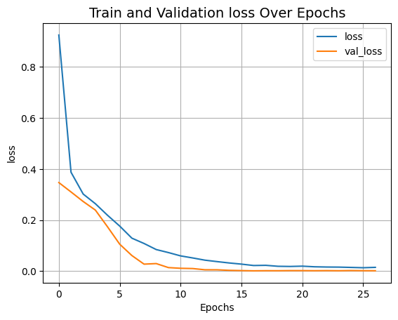
Evaluate the model
import matplotlib.patches as patches
# Saves the model in current path
vit_object_detector.save("vit_object_detector.keras")
# To calculate IoU (intersection over union, given two bounding boxes)
def bounding_box_intersection_over_union(box_predicted, box_truth):
# get (x, y) coordinates of intersection of bounding boxes
top_x_intersect = max(box_predicted[0], box_truth[0])
top_y_intersect = max(box_predicted[1], box_truth[1])
bottom_x_intersect = min(box_predicted[2], box_truth[2])
bottom_y_intersect = min(box_predicted[3], box_truth[3])
# calculate area of the intersection bb (bounding box)
intersection_area = max(0, bottom_x_intersect - top_x_intersect + 1) * max(
0, bottom_y_intersect - top_y_intersect + 1
)
# calculate area of the prediction bb and ground-truth bb
box_predicted_area = (box_predicted[2] - box_predicted[0] + 1) * (
box_predicted[3] - box_predicted[1] + 1
)
box_truth_area = (box_truth[2] - box_truth[0] + 1) * (
box_truth[3] - box_truth[1] + 1
)
# calculate intersection over union by taking intersection
# area and dividing it by the sum of predicted bb and ground truth
# bb areas subtracted by the interesection area
# return ioU
return intersection_area / float(
box_predicted_area + box_truth_area - intersection_area
)
i, mean_iou = 0, 0
# Compare results for 10 images in the test set
for input_image in x_test[:10]:
fig, (ax1, ax2) = plt.subplots(1, 2, figsize=(15, 15))
im = input_image
# Display the image
ax1.imshow(im.astype("uint8"))
ax2.imshow(im.astype("uint8"))
input_image = cv2.resize(
input_image, (image_size, image_size), interpolation=cv2.INTER_AREA
)
input_image = np.expand_dims(input_image, axis=0)
preds = vit_object_detector.predict(input_image)[0]
(h, w) = (im).shape[0:2]
top_left_x, top_left_y = int(preds[0] * w), int(preds[1] * h)
bottom_right_x, bottom_right_y = int(preds[2] * w), int(preds[3] * h)
box_predicted = [top_left_x, top_left_y, bottom_right_x, bottom_right_y]
# Create the bounding box
rect = patches.Rectangle(
(top_left_x, top_left_y),
bottom_right_x - top_left_x,
bottom_right_y - top_left_y,
facecolor="none",
edgecolor="red",
linewidth=1,
)
# Add the bounding box to the image
ax1.add_patch(rect)
ax1.set_xlabel(
"Predicted: "
+ str(top_left_x)
+ ", "
+ str(top_left_y)
+ ", "
+ str(bottom_right_x)
+ ", "
+ str(bottom_right_y)
)
top_left_x, top_left_y = int(y_test[i][0] * w), int(y_test[i][1] * h)
bottom_right_x, bottom_right_y = int(y_test[i][2] * w), int(y_test[i][3] * h)
box_truth = top_left_x, top_left_y, bottom_right_x, bottom_right_y
mean_iou += bounding_box_intersection_over_union(box_predicted, box_truth)
# Create the bounding box
rect = patches.Rectangle(
(top_left_x, top_left_y),
bottom_right_x - top_left_x,
bottom_right_y - top_left_y,
facecolor="none",
edgecolor="red",
linewidth=1,
)
# Add the bounding box to the image
ax2.add_patch(rect)
ax2.set_xlabel(
"Target: "
+ str(top_left_x)
+ ", "
+ str(top_left_y)
+ ", "
+ str(bottom_right_x)
+ ", "
+ str(bottom_right_y)
+ "\n"
+ "IoU"
+ str(bounding_box_intersection_over_union(box_predicted, box_truth))
)
i = i + 1
print("mean_iou: " + str(mean_iou / len(x_test[:10])))
plt.show()
1/1 ━━━━━━━━━━━━━━━━━━━━ 1s 1s/step
1/1 ━━━━━━━━━━━━━━━━━━━━ 0s 1ms/step
1/1 ━━━━━━━━━━━━━━━━━━━━ 0s 1ms/step
1/1 ━━━━━━━━━━━━━━━━━━━━ 0s 2ms/step
1/1 ━━━━━━━━━━━━━━━━━━━━ 0s 1ms/step
1/1 ━━━━━━━━━━━━━━━━━━━━ 0s 1ms/step
1/1 ━━━━━━━━━━━━━━━━━━━━ 0s 1ms/step
1/1 ━━━━━━━━━━━━━━━━━━━━ 0s 1ms/step
1/1 ━━━━━━━━━━━━━━━━━━━━ 0s 2ms/step
1/1 ━━━━━━━━━━━━━━━━━━━━ 0s 1ms/step
mean_iou: 0.9092338486331416
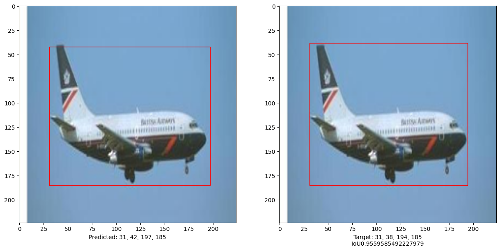
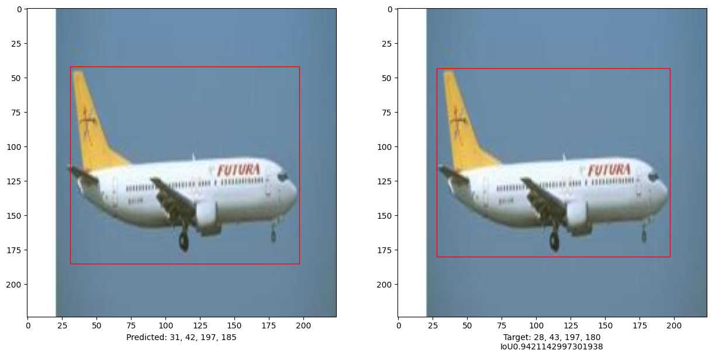
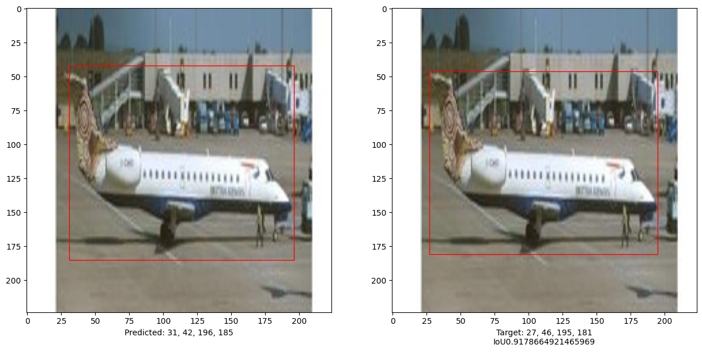
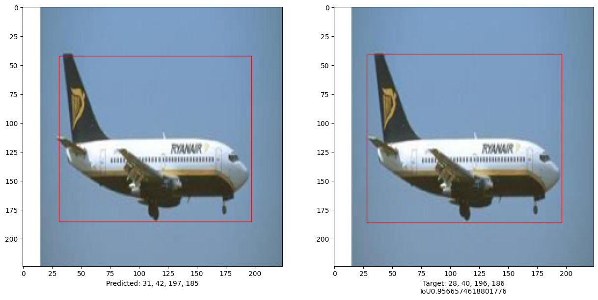
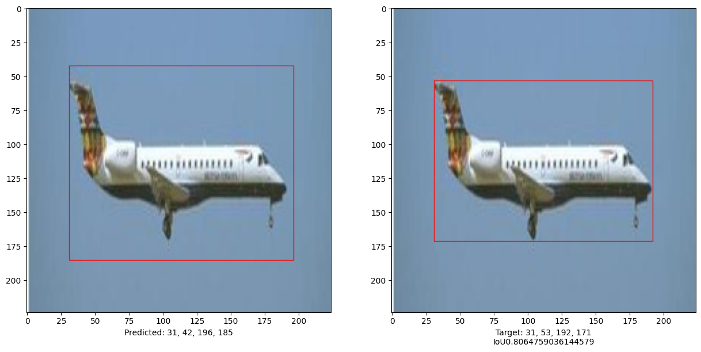
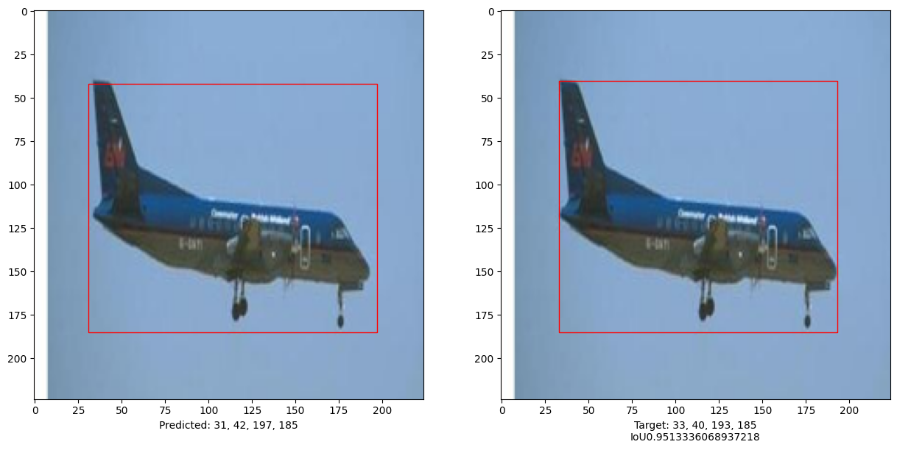
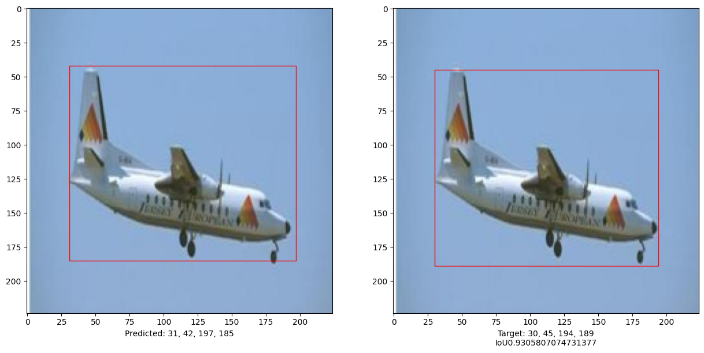
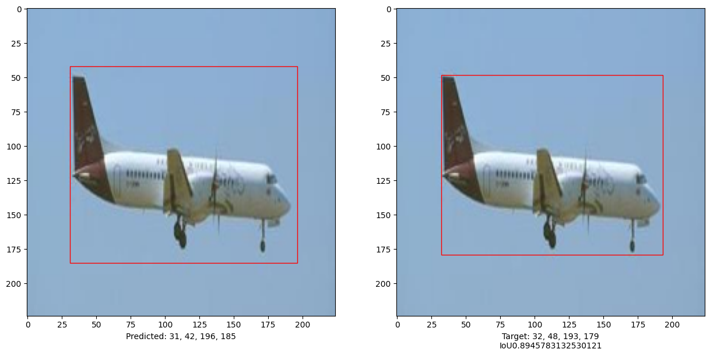
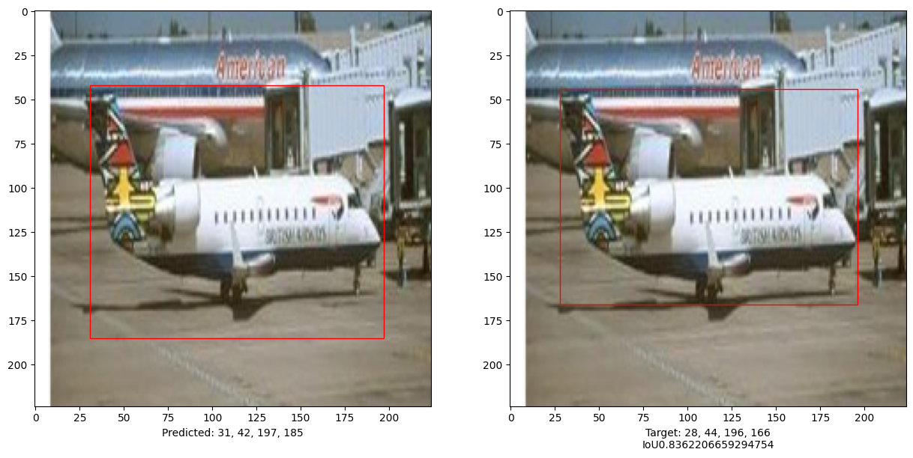
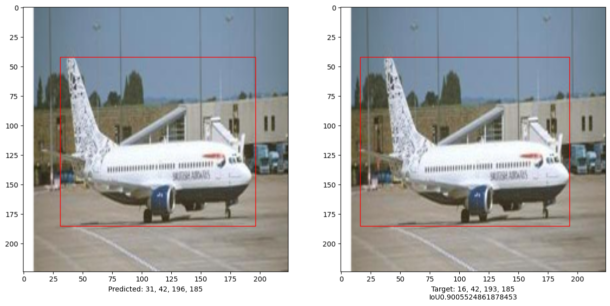
This example demonstrates that a pure Transformer can be trained to predict the bounding boxes of an object in a given image, thus extending the use of Transformers to object detection tasks. The model can be improved further by tuning hyper-parameters and pre-training.